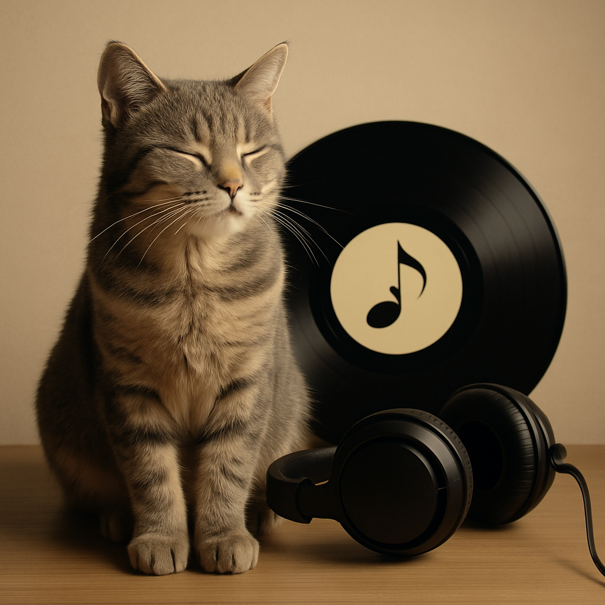

A Sinfonia Secreta dos Felinos: Como a Música Pode Transformar o Dia do Seu Gato

Imagine só: você chega em casa após um dia corrido e encontra seu gato totalmente zen, esticado no sofá como se fosse o dono de um spa cinco estrelas. O segredo? Uma trilha sonora especialmente escolhida para criar o ambiente perfeito para o relaxamento felino.
Pois é, nossos amigos de quatro patas têm gostos musicais mais refinados do que imaginamos! E a ciência por trás disso é fascinante quanto um gato perseguindo um pontinho de luz laser.
O Universo Sonoro dos Felinos
Você já reparou como seu gato para tudo que está fazendo quando ouve um som específico? Não é coincidência. Os felinos possuem uma audição extraordinariamente aguçada - eles conseguem detectar frequências que vão muito além da nossa capacidade humana. Por isso, o ambiente sonoro da casa pode ser o diferencial entre um gato estressado e um gato completamente relaxado.
A descoberta mais interessante? Pesquisadores descobriram que os gatos respondem melhor a músicas que imitam sons naturais do próprio universo felino. Estamos falando de composições que recriam o ritmo do ronronar, o compasso da respiração tranquila e até mesmo as frequências vocais que eles usam para se comunicar entre si.
A Receita Musical Perfeita para Felinos
Então, qual é a fórmula mágica? A ciência nos mostra que os ingredientes ideais para uma playlist felina incluem:
Instrumentos com alma suave: Piano, harpa, violão clássico e até mesmo alguns instrumentos de sopro tocados em tons baixos criam uma atmosfera acolhedora. É como se cada nota fosse um cafuné musical!
Frequências na medida certa: Sons entre 20-50 Hz são os grandes favoritos dos felinos - exatamente a faixa principal do ronronar natural! Essas frequências baixas correspondem às utilizadas em terapias médicas para crescimento ósseo e cicatrização. Para uma experiência completa, a música pode incluir também frequências até 150 Hz (faixa total do ronronar) e elementos em torno de 500-600 Hz (próximos aos miados naturais).
Ritmo de "slow motion": Melodias lentas, com cerca de 60-80 batimentos por minuto, funcionam como uma espécie de meditação sonora. É o equivalente musical a uma massagem relaxante.
Silêncios estratégicos: Assim como uma boa conversa tem pausas, a música para gatos precisa de momentos de silêncio para que eles processem e apreciem cada som.
Quando a Música se Torna Sua Melhor Aliada
A trilha sonora certa pode ser um verdadeiro super-poder em diversas situações do cotidiano felino:
Viagens épicas (ou não tão épicas assim): Aquela ida ao veterinário pode se tornar menos dramática com uma playlist calma tocando no carro. É como ter um "copiloto musical" ajudando seu gato a manter a calma.
Noites de fogos ou tempestades: Quando o mundo lá fora parece um campo de batalha sonoro, sua casa pode se tornar um refúgio musical. A música suave funciona como um "cobertor sonoro" que abafa os ruídos externos.
Processo de adaptação: Mudança de casa? Chegada de um novo membro da família? A música familiar pode ser o fio condutor que ajuda seu gato a se sentir seguro em meio às novidades.
Recuperação pós-procedimentos: Após uma visita ao veterinário ou um pequeno procedimento, a música tranquila pode acelerar o processo de relaxamento e recuperação.
Momentos de socialização: Se você tem mais de um gato, a música pode ajudar a criar um ambiente harmonioso para todos conviverem em paz.
Decifrando os Sinais: Seu Gato Aprovou a Playlist?
Gatos são críticos musicais naturais, e eles não escondem suas opiniões! Aprenda a "ler" a reação do seu felino:
Sinais de aprovação total: Se ele se deita de barriga para cima, pisca lentamente (aquele famoso "beijo de gato"), boceja ou simplesmente se acomoda para uma soneca, parabéns - você acertou na escolha musical!
Neutralidade positiva: Um gato que continua suas atividades normais, mas de forma mais calma, também está aprovando a trilha sonora de fundo.
Hora de trocar de música: Se ele sai da sala, fica inquieto, vocaliza demais ou demonstra sinais de irritação, é melhor experimentar algo diferente. Cada gato tem sua personalidade musical!
Criando o Ambiente Perfeito
- Um cantinho aconchegante com a caminha favorita dele
- Iluminação suave (gatos adoram ambientes com luz indireta)
- Temperatura agradável
- Longe de distrações como barulhos de trânsito ou eletrodomésticos
Sua Playlist Exclusiva Está Aqui!
E que tal testar tudo isso na prática? Preparamos uma playlist especial, cuidadosamente selecionada com base nas pesquisas mais recentes sobre música felina. São faixas que combinam todos os elementos que mencionamos: instrumentos suaves, frequências relaxantes e ritmos que imitam o universo sonoro natural dos gatos.
🎵 Acesse gratuitamente nossa Playlist "Relax Felino"
A playlist inclui desde composições clássicas adaptadas até músicas contemporâneas especialmente criadas para felinos. É o seu kit de primeiros socorros musicais para momentos de estresse felino!
O Bem-Estar Felino é uma Sinfonia
Lembre-se: cada gato é único, e o que funciona para um pode não funcionar para outro. O importante é observar, experimentar e descobrir qual é a "assinatura musical" do seu companheiro. Alguns preferem piano solo, outros se deliciam com harpa, e há aqueles que são fãs de guitarras suaves.
A música é mais uma ferramenta no nosso arsenal de cuidados felinos, junto com a boa alimentação, brincadeiras, carinho e atenção veterinária. Quando combinados, todos esses elementos criam um ambiente onde nossos gatos podem expressar sua natureza mais tranquila e feliz.
Então, que tal experimentar? Coloque nossa playlist para tocar, observe a reação do seu gato e descubra como pequenos ajustes sonoros podem fazer uma grande diferença no bem-estar do seu peludo favorito. Quem sabe você não descobre que tem um crítico musical em casa?
Afinal, um ambiente harmonioso não é apenas sobre o que vemos - é também sobre o que ouvimos. E nossos gatos, com sua sensibilidade aguçada, agradecem quando criamos uma trilha sonora digna da vida felina que eles merecem viver.
← Voltar para o blog